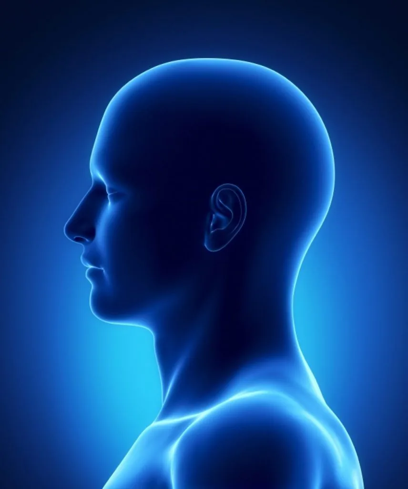
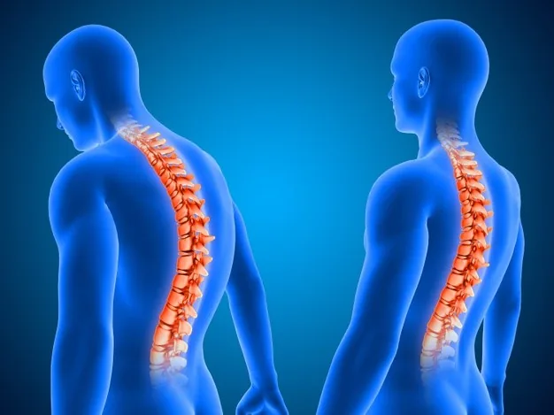
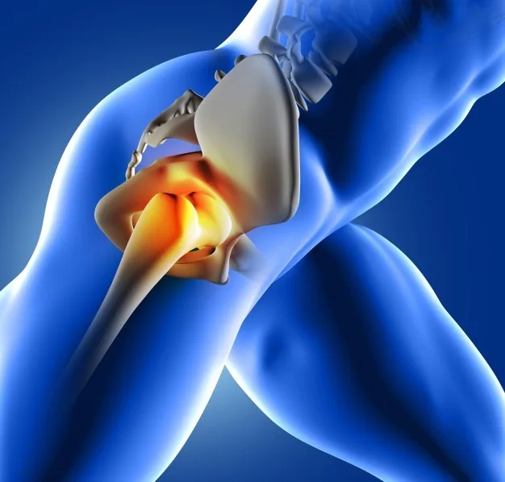
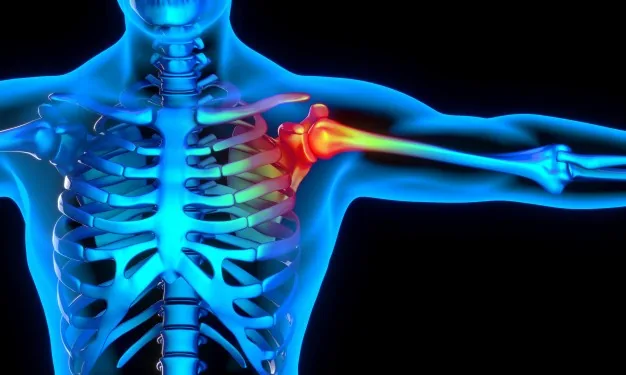
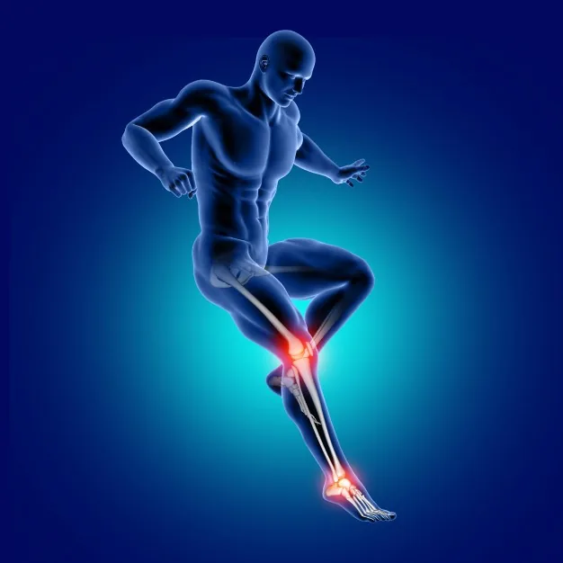

Acondicionamiento Físico
Ejercicios de acondicionamiento físico
El sobrepeso y la obesidad se definen como acumulación de grasa anormal o excesiva que puede deteriorar su salud. Más del 60% de la población tiene algún grado de exceso…
Ver rutina →Reproduzca el video para una mejor visibilidad (Video sin sonido).
Acceso directo por zona corporal o programa de rehabilitación.







Busca por nombre o filtra por categoría. Los videos externos se abren en YouTube para mantener el sitio liviano en GitHub Pages.
El sobrepeso y la obesidad se definen como acumulación de grasa anormal o excesiva que puede deteriorar su salud. Más del 60% de la población tiene algún grado de exceso…
Ver rutina →
Ejercicios de Movilidad Ejercicios de fortalecimiento Ejercicios de propiocepción Referencia Extraído del hospital Provisa, unidad de rehabilitación, España. Publicado…
Ver rutina →
Ejercicios Pendulares Elevación de hombro Estiramientos posteriores Estiramiento acostado Ejercicios de Mariposa Ejercicios de abducción Estiramientos posteriores con…
Ver rutina →
Rutina de movilidad y fortalecimiento para muñeca y mano, orientada a mejorar la función, disminuir la rigidez y favorecer la coordinación en las actividades diarias.
Ver rutina →
Referencias Extraído del hospital Provisa, unidad de rehabilitación, España. Publicado el 07 de mayo 2020. Programa completo de ejercicios y recomendaciones para…
Ver rutina →
Ejercicios deslizamiento de talones Ejercicios de bombeo de talones Ejercicios de subir y bajar escalones Ejercicios de arco corto de cuádriceps Ejercicios de abducción…
Ver rutina →La pandemia por Covid-19 ha afectado a más de setecientas mil personas en Chile. Cerca de un 5% de los pacientes requiere de hospitalizaciones prolongadas y de cuidados…
Ver rutina →
Ejercicios Generales: INDICACIONES: Realizar ejercicios a tolerancia del paciente. Idealmente: - Realizar 1 a 2 series de 5-10 repeticiones de cada ejercicio, y mantener…
Ver rutina →
INDICACIONES: Realizar ejercicios a tolerancia del paciente. Idealmente: Realizar 2 a 3 series de 5-10 repeticiones de cada ejercicio, al menos 3 veces en semana. No…
Ver rutina →Referencia Ser mamá. (31 de Enero, 2019), Estimulación para bebés de 0-3 meses. [Archivo de Video], Youtube,
Ver rutina →
Referencia Ser mamá. (18 de Marzo, 2019), Estimulación para bebés de 3-6 meses. [Archivo de Video], Youtube.
Ver rutina →
Ejercicios y actividades de estimulación temprana para favorecer el inicio del gateo, el control postural y la coordinación motora de manera progresiva.
Ver rutina →
Indicaciones generales Realizar ejercicios a tolerancia del paciente. Idealmente: 2 a 3 series de 10 a 20 repeticiones 3 veces al día, todos los días, hasta el siguiente…
Ver rutina →Rutina de apoyo para fortalecer el piso pélvico, mejorar el control muscular y favorecer el bienestar funcional siguiendo las indicaciones del profesional tratante.
Ver rutina →